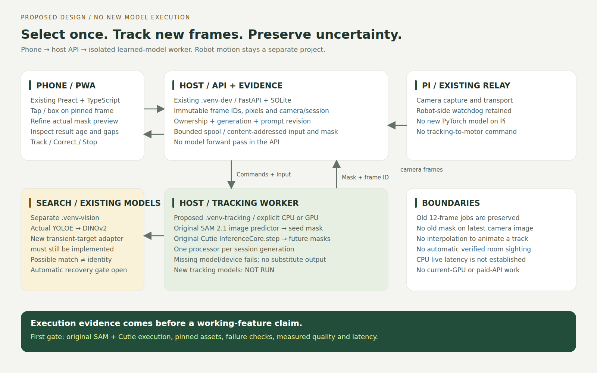
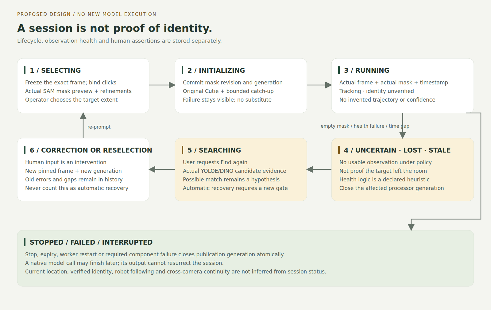
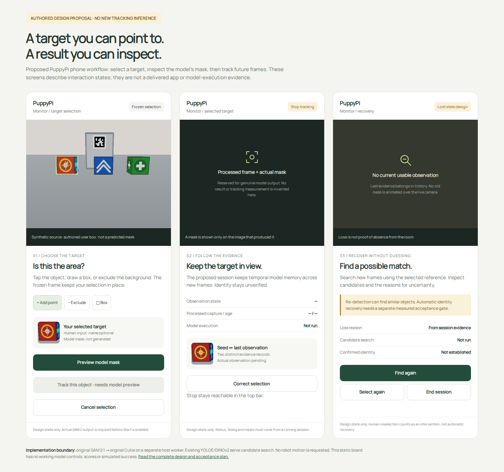

<!doctype html><html lang="en"><meta charset="utf-8"><title>PuppyPi proposed tracking design figures</title><style>@page{size:A3 landscape;margin:12mm}body{margin:0;font-family:Arial}section{break-after:page;height:265mm;display:flex;align-items:center;justify-content:center}section:last-child{break-after:auto}img{max-width:100%;max-height:100%;object-fit:contain}</style><section></section><section></section><section></section></html>